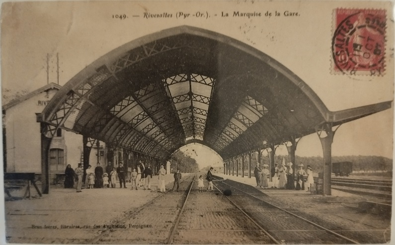
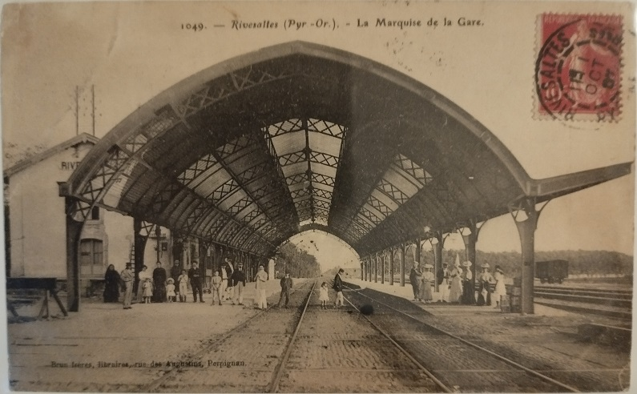

Pour alléger la page sur l'historique de voie ferrée, je crée cette annexe avec les cartes postales anciennes des collections de Paul Dumanois et Thierry Meynier
Cliquer ici pour faire un Commentaire
Retour à l'accueil historique voie ferrée


 
